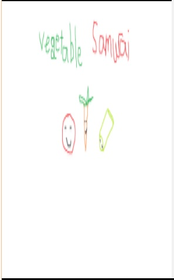
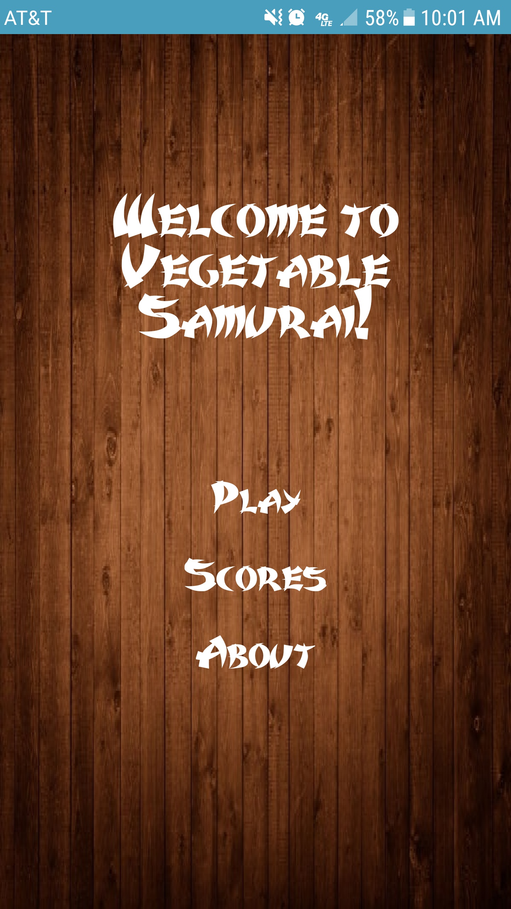
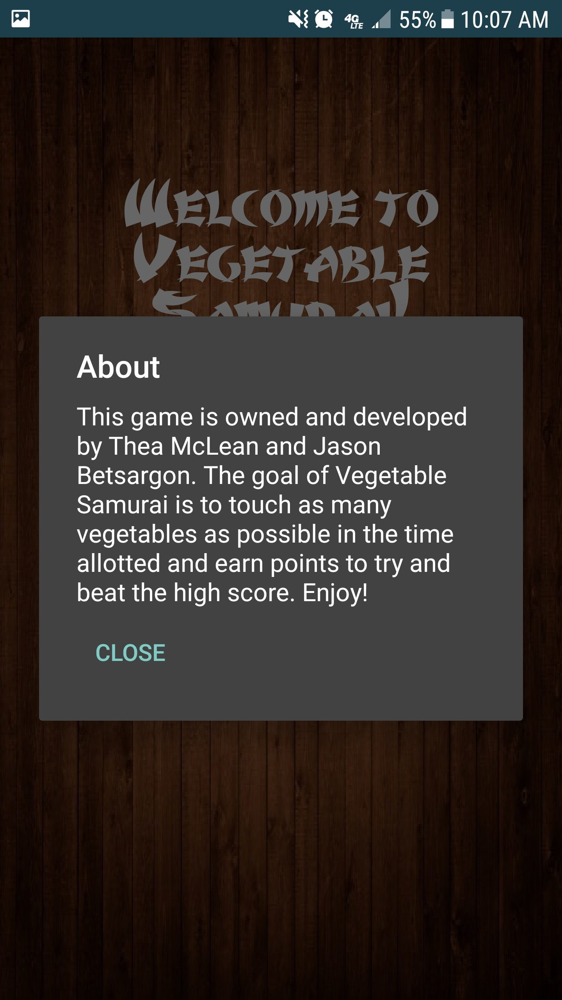
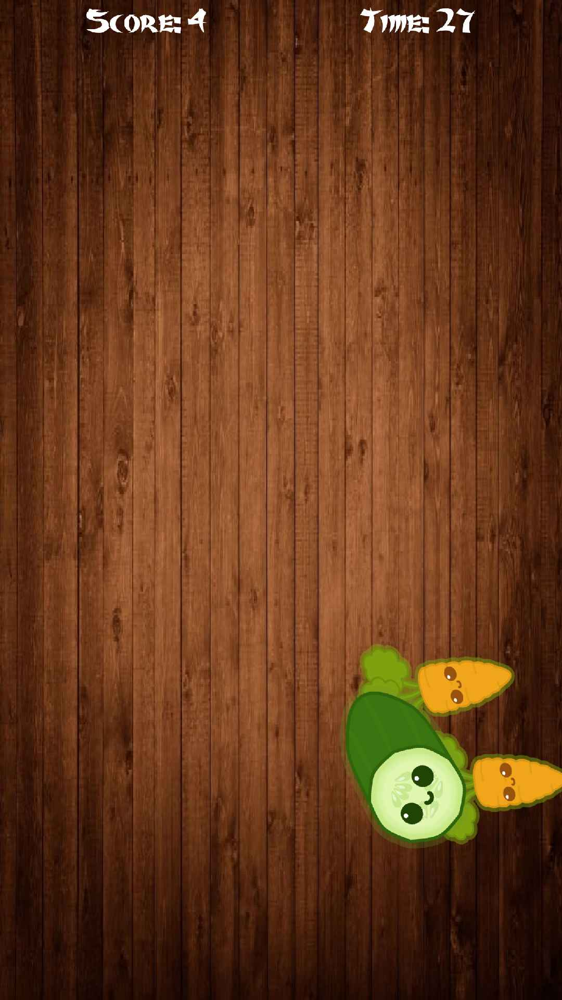
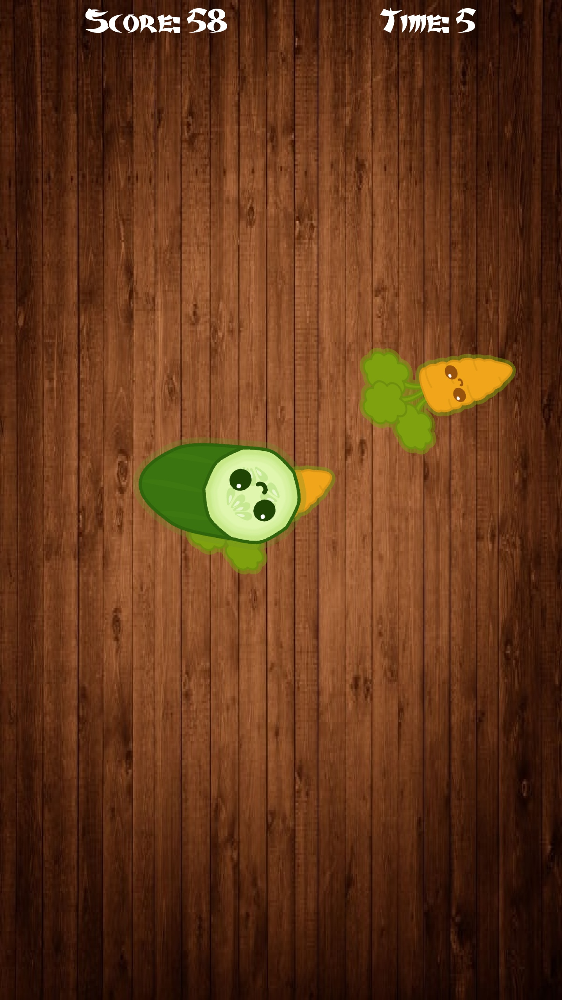
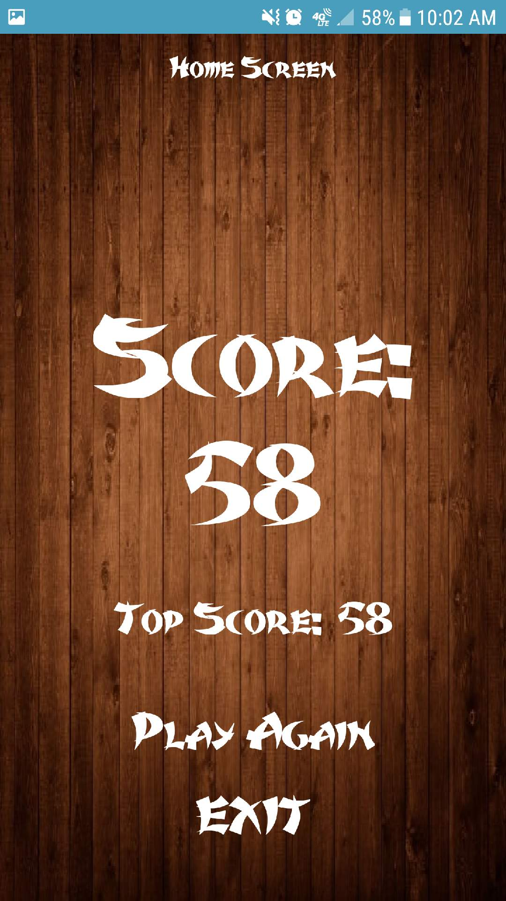

Using Thunkable for the programming language, my partner and I created a program called Vegetable Samurai.
Upon opening the game, a splash screen pops up for a couple seconds before taking the player to the main screen.
Three options are listed: "Play", "Scores", and "About".
 Pressing the "Scores" button causes a notification to pop up on the phone, providing the player with the current top score.

Pressing the "About" button causes another notification to pop up, giving a brief description of the game and the names of the creators.
After pressing "Play", the screen switches to the game screen and vegetables spawn from the bottom. The player has 30 seconds to tap as many vegetables as possible to gain points that the Tiny Database keeps track of and updates in the top left-hand corner.
 Once time runs out, the game stops and the screen swtiches to show the player their score and their current high score. Options to "Play Again" (that will take the player back to the gaming screen) or "Exit" (that will close the game out completely) are listed.
